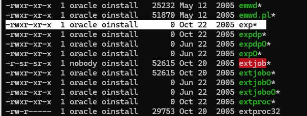

Oracle 自動化資料同步：測試環境建置
目前在公司開發需求時，都是直接在正式資料庫環境進行開發，一開始真的覺得很怪。雖然有建立測試資料庫，但都是要特別請公司 DBA 處理才會還原，跟正式環境早就脫鉤，差異非常大。過去在別家公司的經驗是從 NAS 抓需要的 dump 檔回本地資料庫還原。
最近剛好熟悉了 Oracle 10.2 的匯入匯出功能，加上主管反映希望測試 DB 能跟正式環境同步，不要差異太大，想說把測試環境的資料同步做成自動化。這次的目標是透過運行在 Linux 上的 Cronicle（排程系統，可運行 bash）直接從 NAS 抓取 dump 檔，然後透過 Oracle client 匯入到遠端資料庫的 Schema。
環境背景
- 本地端：Windows 10 + Oracle Client 11.2.0.2.0
- 異地資料庫伺服器：Windows 2008 + Oracle 10.2
- 排程系統：Linux + Cronicle
- Dump 儲存位置：NAS
問題1：Oracle 10.2 Client 套件
找不到 Full Client 套件
第一個大問題就是在 Linux 環境找不到 Oracle 10.2 的 imp 和 exp 工具。
官網 Instant Client 測試，發現提供下載的套件只有下列：
- Basic Package - 基本功能
- SQL*Plus Package
- JDBC、ODBC、SDK
查到相關的問題論壇討論：這些工具只包含在 full client 中，但 Oracle 官方表示 10.2 已經不提供下載了。
10g is no longer available for download - if you have paid for extended support, then pl open an SR with Support
找到套件但硬裝失敗
最後在 DBA 協助下，在國外論壇找到相關套件：
10201_database_linux_x86_64.cpio.gz # Database 完整版 |
但安裝時，因為 Linux 版本不符：
Checking operating system version: must be redhat-3, SuSE-9, redhat-4, UnitedLinux-1.0, asianux-1 or asianux-2 |
加上 -ignoreSysPrereqs 略過版本檢查後，又遇到新問題：
The user is root. Oracle Universal Installer cannot continue installation if the user is root. |
只好建立新使用者重新安裝，中間還遇到權限問題折騰了一陣子…
好不容易安裝完成，結果發現 bin/ 目錄中的 exp、imp 工具居然都是 0KB！

看來是版本不符硬裝的下場 😅（Client 和 Database 完整版都試過了，結果都一樣）
解決方案
既然在 Linux 環境裝不起來，只好改變策略。有兩個選擇：
- Cronicle SSH 到本地端執行 - 在我的 Windows 10 + Oracle Client 11.2 環境
- Cronicle SSH 到異地資料庫伺服器執行 - 直接在 Windows Server 2008 R2 上跑
最後選擇先在本地端完成，原因是：
- 測試較安全，不影響到正式環境
- 匯入過程可能會消耗較多資源，避免影響資料庫效能
- 後續穩定後再考慮搬移到異地資料庫伺服器執行，並改使用
impdp/expdp提升速度
自動化腳本流程
整個流程分為 8 個步驟：
- 開始通知 - Slack 通知開始執行
- 清理舊檔案 - 清除前一次的備份檔案
- 下載備份檔 - 從 NAS 複製昨天的 ZIP 檔案
- 解壓縮 - 解壓縮備份檔案（有密碼保護）
- 重新命名 - 將檔案重新命名加上日期
- 重建使用者 - DROP 並重新建立測試環境使用者
- 分階段匯入 - 先匯入結構，再匯入資料
- 完成通知 - Slack 通知執行結果
實作可參考我的 GitHub：
Oracle Backup Import Scripts
問題2：匯入過程的錯誤處理
複雜環境下的匯入錯誤
對於簡單的資料庫結構，匯入過程通常不會有問題，基本上可以無錯誤完成。
但在目前的正式環境中，卻會遇到許多問題：
Schema 硬編碼問題
- 有些 Function、View、Procedure 等資料庫物件在建立時會直接寫死 Schema 名稱
- 導致匯入到不同環境時出現參照錯誤
ID 衝突問題
- Oracle Job 的 ID 會與目標資料庫中現有的 Job ID 產生衝突
- 造成匯入失敗或覆蓋現有物件
錯誤處理策略
由於這些問題在複雜環境中幾乎無法避免。因此：
- 停用了報錯通知功能
- 改為觀察執行時間來判斷是否完成
問題3：意外的資料庫空間問題
突如其來的正式環境異常
就在整個自動化流程都運作正常後，突然接到正式資料庫無法進行新增、修改等操作的緊急通報。
查證後發現確實是因為我一直在測試匯入等操作，造成資料庫空間不足：
錯誤訊息
ORA-00257: archiver error. Connect internal only, until freed. |
問題原因
- UNDO Tablespace 空間不足
- ARCHIVED LOG 累積過多未清理
解決方法
針對這兩個空間問題，需要分別處理：
UNDO Tablespace 擴展
修改 UNDO Tablespace 設定，讓它能自動擴展：
ALTER DATABASE DATAFILE 'UNDOTBS01.DBF' |
ARCHIVED LOG 清理
需要到資料庫主機執行 RMAN 指令清除過期的歸檔日誌：
rman |
後續規劃
ARCHIVED LOG 自動化處理
- 建立自動化監控，當 ARCHIVED LOG 空間大於指定值時自動執行清理
- 將 RMAN 清理腳本加入定期排程
匯入流程改善
- 評估搬移到異地資料庫伺服器執行，測試使用
impdp/expdp提升效率
- 評估搬移到異地資料庫伺服器執行，測試使用
結論
這次經驗真的讓我更深入了解 Oracle，過去我只使用基本的資料庫功能，這次又提升了資料庫的知識。
過去只大概知道底層不相同，以為差異不會太大，只是差別在 SQL 語法，結果實際遇到才知道差這麼多！
與 PostgreSQL 的簡單比較
過去的工作經驗主要使用 PostgreSQL，通常匯入都沒什麼問題，不會遇到像 Oracle 這樣的硬編碼、ID 衝突，以及意外的空間不足等問題。深入了解後發現是架構的根本差異：
資料庫結構差異
- Oracle：一個實例只能有一個資料庫，Schema 等於 User（擁有者+命名空間），每個 User 就是一個獨立的 Schema
- PostgreSQL：可以建立多個資料庫，Schema 是單純的命名空間概念，使用者與 Schema 可分離管理
日誌管理機制
- Oracle：使用 ARCHIVED LOG，需要手動清理
- PostgreSQL：使用 WAL（Write-Ahead Logging），會自動清除
空間管理
- Oracle：需要手動管理 Tablespace、UNDO 空間、ARCHIVED LOG 等，容易出現空間不足問題
- PostgreSQL：空間管理相對簡單，WAL 自動回收，較少需要手動干預